Seus pagamentos no ritmo do seu calendário.
Planeje contas e assinaturas, defina lembretes e mantenha uma visão mensal clara. Seus dados permanecem no dispositivo.
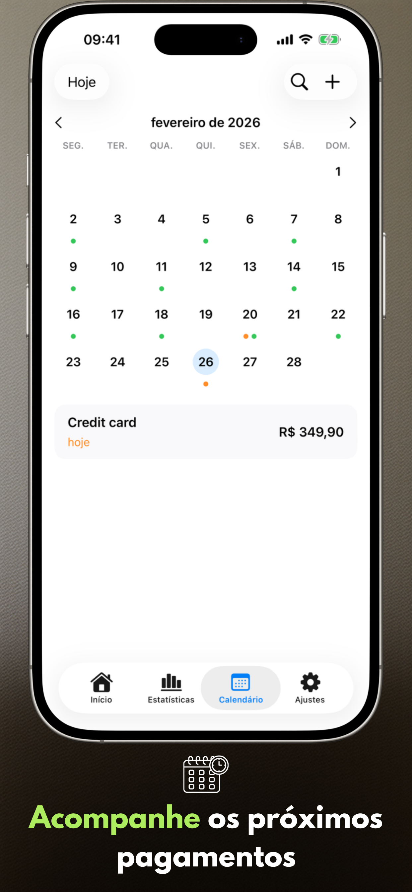
- Adicionada a edição da data real do pagamento
- Adicionado o indicador "Tudo pago" na tela inicial
- Melhoradas as estatísticas e a visualização do calendário
- Animações mais suaves, melhor legibilidade e visual aprimorado no iPad
Conheça o aplicativo
Seis telas principais no iPhone e no iPad que mostram o ritmo de planejamento com o Payment Calendar.
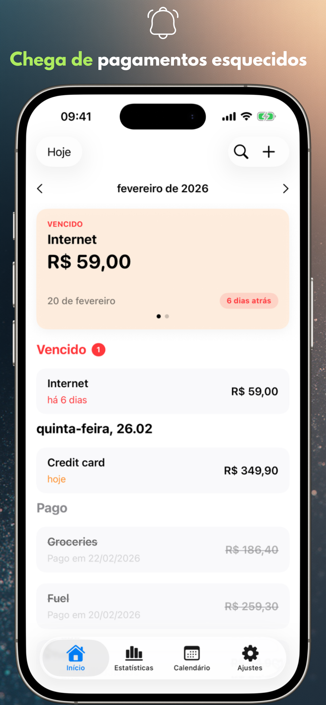
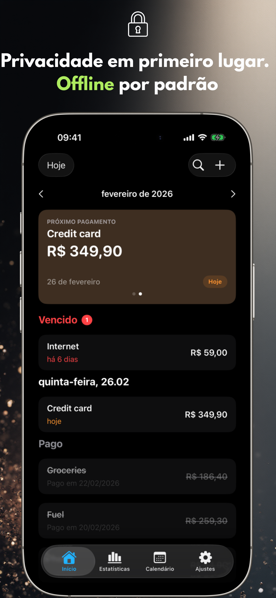
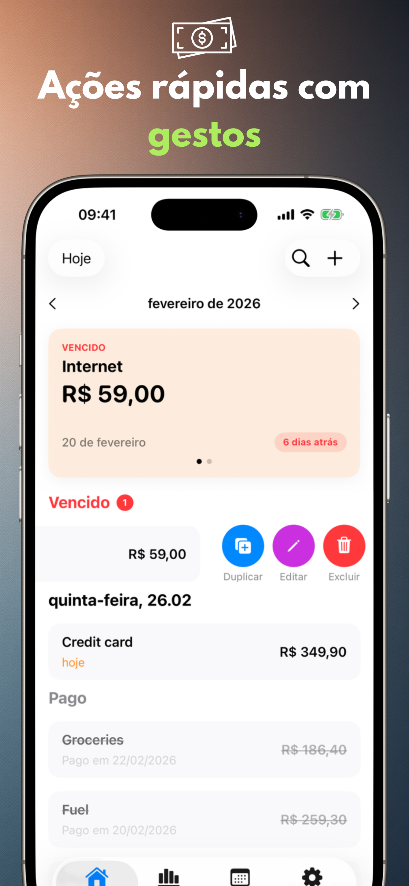
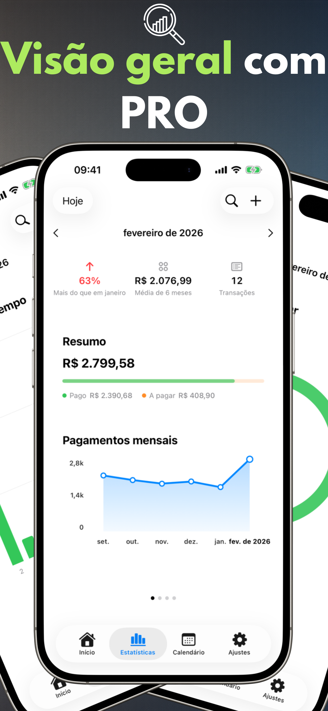
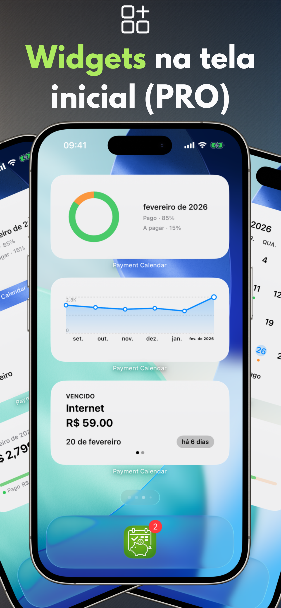
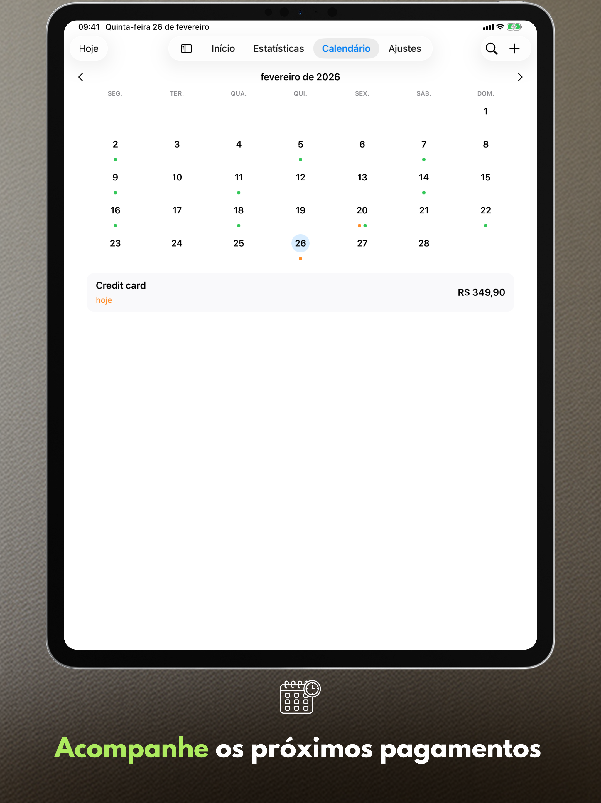
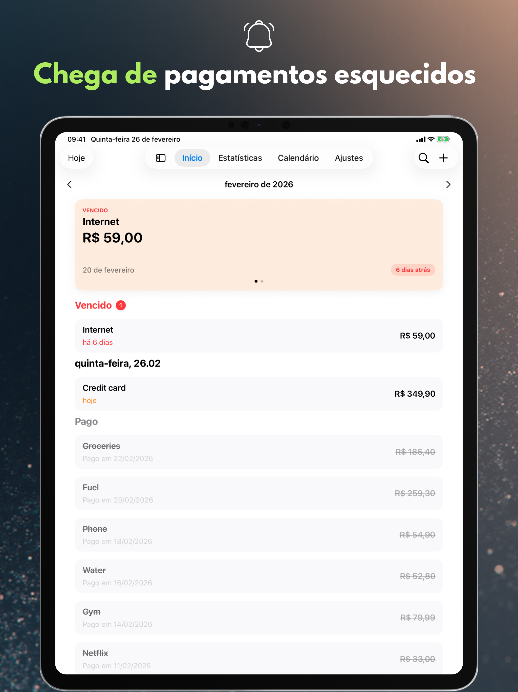
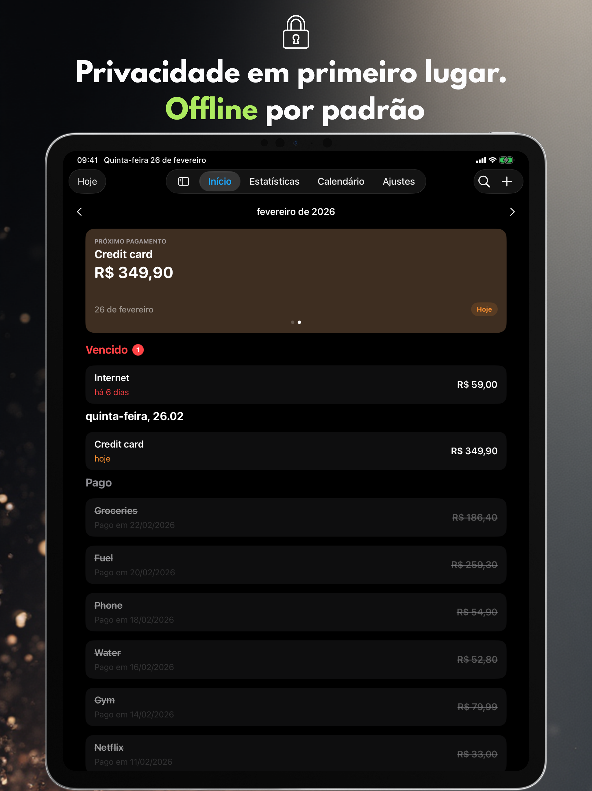
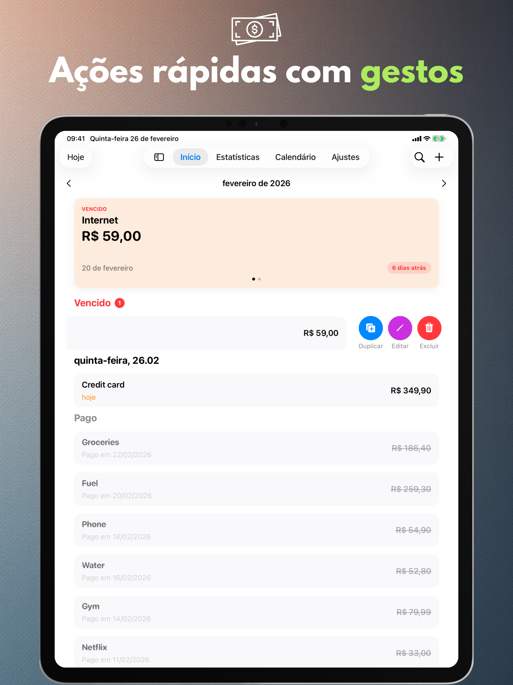
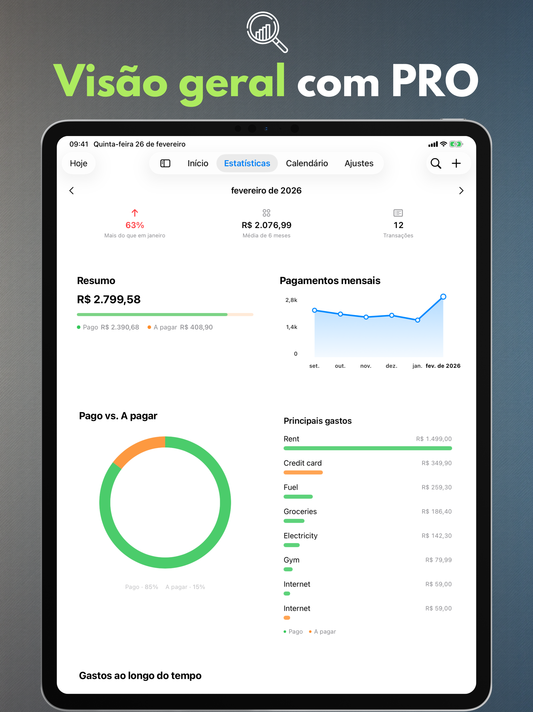
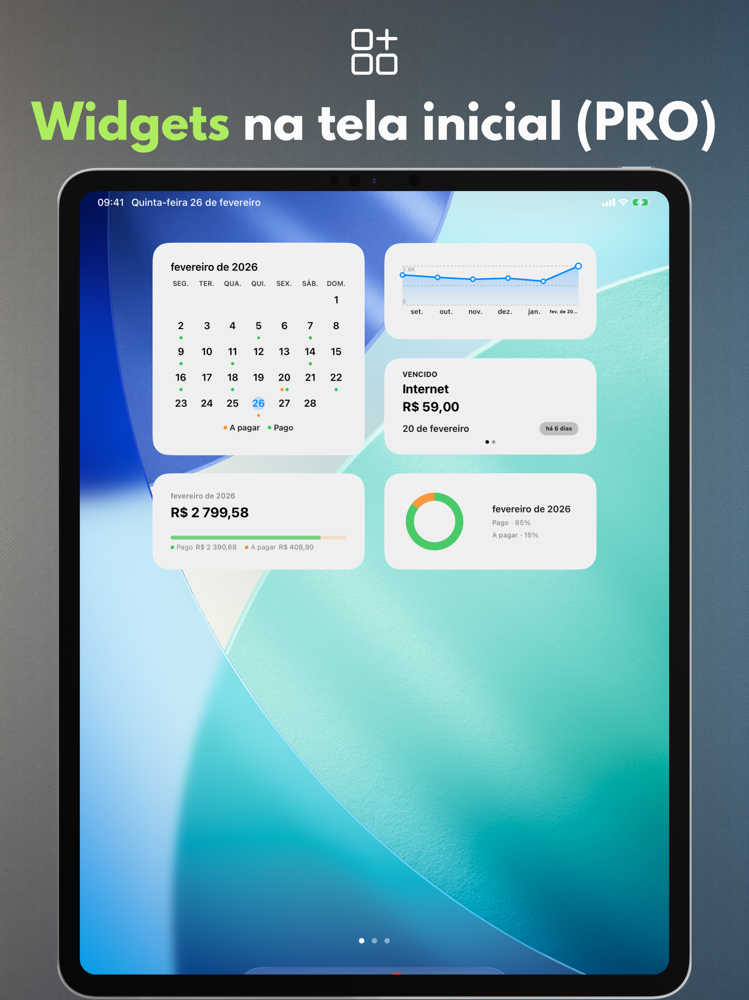
Recursos principais
Uma visualização mensal clara, entrada rápida e lembretes que ajudam você a ficar um passo à frente de cada pagamento.
Calendário de pagamentos
Veja datas de vencimento próximas e sua lista de pagamentos em um só lugar.
Lembretes
Receba notificações na data de vencimento ou alguns dias antes.
Gestos e ações rápidas
Marque como pago, edite ou duplique com um deslizar.
Pesquisa
Encontre pagamentos por nome, valor ou notas.
Configurações pessoais
Moeda, início da semana, design e um layout que combina com você.
Suporte ao iPad
Otimizado para iPad, incluindo modo de janelas e Split View.
Exportação CSV/PDF (PRO)
Exporte resumos quando você precisar de um relatório.
Seus dados permanecem no dispositivo.
O Payment Calendar não requer conta e não rastreia suas atividades. A sincronização com iCloud é opcional e desativada por padrão.
Sem anúncios, sem análises
Não usamos SDKs de terceiros para análises ou publicidade.
Controle de dados
Exclua seus dados a qualquer momento no aplicativo ou removendo-o.
Recursos PRO
Faça upgrade para estatísticas, widgets e automação.
Estatísticas e tendências
Resumos mensais mais visualização de tendências de 6 meses.
Widgets
Veja o próximo pagamento rapidamente na tela inicial.
Pagamentos recorrentes
Crie pagamentos recorrentes automaticamente.
Sincronização com iCloud
Mantenha os dados sincronizados entre seus dispositivos quando ativado.
Exportação CSV/PDF
Compartilhe resumos ou arquive seus dados.
11 idiomas disponíveis
O Payment Calendar suporta polonês, inglês, espanhol, alemão, francês, italiano, ucraniano, sueco, chinês simplificado, japonês e português (Brasil).
Perguntas frequentes (FAQ)
Veja respostas rápidas para as dúvidas mais comuns sobre o Payment Calendar.
Antes de baixar
Como não esquecer de pagar uma conta?
O Payment Calendar mostra todos os pagamentos próximos em uma visualização mensal e envia lembretes antes do vencimento, para que você veja com antecedência o que precisa pagar e quando.
Como acompanhar assinaturas para não pagar por serviços que não uso mais?
Adicione suas assinaturas como pagamentos recorrentes (recurso PRO) — o aplicativo lembra automaticamente de cada renovação, o que facilita perceber e cancelar as que você não usa mais.
Existe um aplicativo como um calendário, mas para contas e pagamentos?
Sim, essa é exatamente a ideia do Payment Calendar — a visualização mensal mostra pagamentos em vez de eventos, indicando o que já está pago e o que ainda vence.
Como gerenciar pagamentos sem criar uma conta?
O Payment Calendar não exige cadastro nem login — você instala o aplicativo e já pode adicionar pagamentos. Os dados ficam no dispositivo, a menos que você ative a sincronização opcional com iCloud.
Qual é a diferença entre o Payment Calendar e o calendário comum do celular?
Um calendário comum mostra eventos, não pagamentos — não existe status de "pago / a pagar", lembretes voltados para contas nem visão dos seus gastos. O Payment Calendar foi criado especificamente para pagamentos: com valores, moedas, recorrência e estatísticas do quanto você realmente gasta por mês.
O básico
O que é o aplicativo Payment Calendar?
Payment Calendar é um aplicativo para iPhone e iPad (iOS/iPadOS) para acompanhar contas e pagamentos futuros em formato de calendário. Ele ajuda você a ver rapidamente o que vence e marcar pagamentos como pagos.
O aplicativo funciona offline?
Sim. O aplicativo funciona offline e não exige conta nem conexão com a internet. Os dados ficam armazenados localmente no dispositivo. A sincronização opcional via iCloud (na versão PRO) permite acesso em vários dispositivos Apple.
Em quais dispositivos o Payment Calendar funciona?
O aplicativo funciona em iPhone e iPad com iOS/iPadOS 18.0 ou mais recente.
Privacidade e dados
Meus dados financeiros estão seguros?
Sim. O Payment Calendar não coleta dados do usuário e não exige login. Seus dados permanecem no seu dispositivo, e a sincronização opcional via iCloud (na versão PRO) acontece dentro do ecossistema Apple.
O Payment Calendar se conecta à minha conta bancária?
Não. O Payment Calendar não se conecta a bancos nem importa transações automaticamente — você adiciona os pagamentos manualmente. É uma escolha consciente: o aplicativo prioriza a privacidade desde o início e não precisa de acesso à sua conta bancária para funcionar.
Recursos
Posso adicionar pagamentos recorrentes e assinaturas?
Sim. Você pode adicionar pagamentos recorrentes, como assinaturas e contas mensais. Esse recurso está disponível na versão PRO.
O aplicativo envia lembretes de pagamentos próximos?
Sim. Você pode configurar lembretes para não perder nenhum pagamento.
Quais moedas o Payment Calendar suporta?
O aplicativo suporta uma ampla variedade de moedas, incluindo peso colombiano, tugrik mongol, peso mexicano, peso chileno e dólar neozelandês. A formatação (símbolos, separadores, arredondamento) se ajusta automaticamente à região do seu dispositivo.
Posso exportar meus pagamentos?
Sim, na versão PRO. Você pode exportar seus dados em CSV ou PDF, por exemplo para um relatório ou arquivamento.
Posso corrigir a data real do pagamento?
Sim. O formulário de edição de um pagamento já pago tem o campo "Pago em", onde você pode definir a data real do pagamento. As estatísticas continuam agrupando os pagamentos pela data de vencimento, não pela data em que foram pagos.
Existe widget para a tela inicial?
Sim, na versão PRO. O widget mostra seu próximo pagamento diretamente na tela inicial do iPhone ou iPad, sem precisar abrir o aplicativo.
O Payment Calendar é um aplicativo de gestão de orçamento doméstico?
Não. Ele é um calendário de contas que ajuda a acompanhar pagamentos futuros e pagos. Não gerencia receitas, saldo de contas nem orçamento.
Sincronização e idiomas
Os dados sincronizam entre iPhone e iPad?
Sim, se você ativar a sincronização opcional com iCloud (recurso PRO) — assim, seus pagamentos ficam disponíveis em todos os dispositivos Apple conectados à mesma conta iCloud. Sem essa opção, os dados ficam apenas no dispositivo local.
Em quais idiomas o aplicativo está disponível?
O Payment Calendar está disponível em 11 idiomas: polonês, inglês, espanhol, alemão, francês, italiano, ucraniano, sueco, chinês simplificado, japonês e português (Brasil).
Plataformas
O Payment Calendar está disponível para Android?
Não. Atualmente o Payment Calendar está disponível apenas para iPhone e iPad (iOS/iPadOS).
Existe versão para Apple Watch?
Ainda não, mas o suporte ao watchOS está nos planos de desenvolvimento do aplicativo.
Preço e PRO
Posso usar o aplicativo sem assinatura paga?
Sim. Os recursos básicos são gratuitos. Os recursos PRO, como pagamentos recorrentes e sincronização iCloud, exigem assinatura ou compra única.
Quanto custa a versão PRO e posso cancelar a assinatura?
O preço varia por região e é exibido no aplicativo e na App Store. Você pode escolher entre assinatura mensal, anual ou compra única vitalícia (Lifetime). A assinatura é gerenciada e cancelada nas configurações do Apple ID, como qualquer outra assinatura da App Store.
Suporte
Está faltando uma moeda ou tenho uma ideia para um novo recurso — o que posso fazer?
Escreva para payment_calendar@icloud.com. Eu leio e respondo pessoalmente a cada e-mail — sugestões e ideias dos usuários realmente chegam às próximas versões.
Pronto para um planejamento de pagamentos mais tranquilo?
O Payment Calendar mantém cada data de vencimento sob controle.